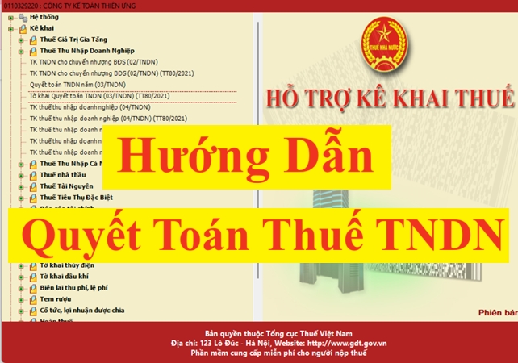

Hướng dẫn làm quyết toán thuế TNDN trên phần mềm HTKK mới nhất năm 2026
I. Tổng quan về quyết toán thuế thu nhập doanh nghiệp
Thuế Thu nhập doanh nghiệp là loại thuế có kỳ tính thuế theo năm
=> Khai thuế thu nhập doanh nghiệp là loại khai quyết toán năm
=> Khai thuế thu nhập doanh nghiệp là loại khai quyết toán năm
1. Các văn bản pháp luật hiện hành liên quan đến quyết toán thuế TNDN
+ Thông tư 80/2021/TT-BTC hướng dẫn Luật Quản lý thuế và Nghị định 126/2020/NĐ-CP quy định chi tiết một số điều của Luật Quản lý thuế (ban hành ngày 29/09/2021, có hiệu lực từ ngày 01/01/2022)
2. Hồ sơ khai quyết toán thuế TNDN:
+ Luật thuế thu nhập doanh nghiệp số 67/2025/QH15 ban hành ngày 14/06/2025, có hiệu lực thi hành từ ngày 01 tháng 10 năm 2025 và áp dụng từ kỳ tính thuế thu nhập doanh nghiệp năm 2025.
+ Nghị định 320/2025/NĐ-CP hướng dẫn Luật Thuế thu nhập doanh nghiệp số 67/2025/QH15, có hiệu lực từ ngày 15/12/2025 và áp dụng từ kỳ tính thuế thu nhập doanh nghiệp năm 2025.
+ Nghị định 126/2020/NĐ-CP hướng dẫn Luật Quản lý thuế (ban hành ngày 19/10/2020, có hiệu lực từ ngày 05/12/2020)
+ Nghị định 320/2025/NĐ-CP hướng dẫn Luật Thuế thu nhập doanh nghiệp số 67/2025/QH15, có hiệu lực từ ngày 15/12/2025 và áp dụng từ kỳ tính thuế thu nhập doanh nghiệp năm 2025.
+ Nghị định 126/2020/NĐ-CP hướng dẫn Luật Quản lý thuế (ban hành ngày 19/10/2020, có hiệu lực từ ngày 05/12/2020)
Sửa đổi bổ sung tại: Nghị định 91/2022/NĐ-CP (Ban hành ngày 30/10/2022, có hiệu lực từ ngày 30/10/2022)
+ Thông tư 80/2021/TT-BTC hướng dẫn Luật Quản lý thuế và Nghị định 126/2020/NĐ-CP quy định chi tiết một số điều của Luật Quản lý thuế (ban hành ngày 29/09/2021, có hiệu lực từ ngày 01/01/2022)
2. Hồ sơ khai quyết toán thuế TNDN:
- Tờ khai quyết toán thuế thu nhập doanh nghiệp theo mẫu số 03/TNDN ban hành kèm theo phụ lục II Thông tư số 80/2021/TT-BTC;
- Báo cáo tài chính năm hoặc Báo cáo tài chính đến thời điểm có quyết định giải thể, phá sản, chấm dứt hoạt động hoặc tổ chức lại doanh nghiệp theo quy định của pháp luật về kế toán và pháp luật về kiểm toán độc lập (trừ trường hợp không phải lập báo cáo tài chính theo quy định);
- Một hoặc một số phụ lục kèm theo tờ khai (tuỳ theo thực tế phát sinh của người nộp thuế) ban hành kèm theo phụ lục II Thông tư số 80/2021/TT-BTC

3. Thời hạn nộp hồ sơ khai quyết toán thuế TNDN năm:
Chậm nhất là ngày cuối cùng của tháng thứ 3 kể từ ngày kết thúc năm dương lịch hoặc năm tài chính.
Thời hạn nộp tờ khai QTT TNDN năm 2025: chậm nhất là ngày 31/03/2026
4. Thời hạn nộp tiền thuế TNDN sau quyết toán
Chậm nhất là ngày cuối cùng của tháng thứ 3 kể từ ngày kết thúc năm dương lịch hoặc năm tài chính.
II. Trình tự làm tờ khai quyết toán thuế TNDN trên phần mềm HTKK:
Bước 1: Đăng nhập vào phần mềm HTKK
=> Nhập MST của DN muốn kê khai
Bước 2: Chọn mẫu tờ khai:
=> Vào mục “Thuế thu nhập doanh nghiệp”
=> Chọn tờ khai: “Tờ khai Quyết toán TNDN (03/TNDN) (TT80/2021)”
Bước 3: Chọn kỳ tính thuế=> Chọn tờ khai: “Tờ khai Quyết toán TNDN (03/TNDN) (TT80/2021)”
+ Trường hợp quyết toán: chọn trường hợp quyết toán (Quyết toán thuế TNDN hàng năm thì chọn "Quyết toán định kỳ")
+ Năm: Chọn năm thực hiện quyết toán
+ Năm: Chọn năm thực hiện quyết toán
Ghi rõ kỳ tính thuế năm (theo năm dương lịch hoặc năm tài chính đối với doanh nghiệp áp dụng năm tài chính khác với năm dương lịch)
+ Từ ngày …….…. Đến ngày …….….
Từ ngày: ghi ngày đầu tiên của năm dương lịch/năm tài chính hoặc ngày bắt đầu hoạt động kinh doanh (đối với doanh nghiệp mới thành lập)
Đến ngày: ghi ngày kết thúc năm dương lịch/năm tài chính hoặc ngày chấm dứt hoạt động kinh doanh hoặc chuyển đổi hình thức sở hữu doanh nghiệp hoặc tổ chức lại doanh nghiệp được xác định phù hợp với kỳ kế toán theo quy định của pháp luật về kế toán.
Đến ngày: ghi ngày kết thúc năm dương lịch/năm tài chính hoặc ngày chấm dứt hoạt động kinh doanh hoặc chuyển đổi hình thức sở hữu doanh nghiệp hoặc tổ chức lại doanh nghiệp được xác định phù hợp với kỳ kế toán theo quy định của pháp luật về kế toán.
+ Trạng thái tờ khai: Nếu là lần đầu làm tờ khai QTT TNDN cho kỳ tính thuế (năm) đã chọn ở trên thì để ở dòng mặc định "Tờ khai lần đầu"
Còn trường hợp: Sau khi DN nộp tờ khai lần đầu và đã nhận được Thông báo chấp nhận hồ sơ khai thuế đối với Tờ khai thuế “Lần đầu” => DN phát hiện ra hồ sơ khai thuế lần đầu đã nộp cho cơ quan thuế có sai, sót => DN tiến hành làm tờ khai điều chỉnh bổ sung cho tờ khai thuế có sai sót đó thì sẽ thực hiện chọn trạng thái tờ khai là “Bổ sung” theo số thứ tự của từng lần bổ sung.
=> Chọn phụ lục tờ khai:
+ Phụ lục 03-1A/TNDN - Phụ lục kết quả hoạt động sản xuất kinh doanh (áp dụng đối với ngành sản xuất, thương mại, dịch vụ, trừ công ty an ninh, quốc phòng)
Và 1 số các phụ lục khác theo tình hình thực tế của DN
Bước 4: Bấm “Đồng ý” để vào giao diện tờ khai QTT TNDN mẫu 03/TNDN theo TT 80/2021
Và 1 số các phụ lục khác theo tình hình thực tế của DN
Chọn xong bước 3 thì các bạn bấm vào đồng ý
Bước 5: Hoàn thiện Phụ lục 03-1A/TNDN trước
-> Để phần mềm tự động tổng hợp số liệu Tổng lợi nhuận kế toán trước thuế TNDN lên Chỉ tiêu [A1] trên tờ khai quyết toán mẫu 03/TNDN.
Chi tiết các bạn xem tại đây: Cách làm Phụ lục 03-1A/TNDN Phụ lục kết quả hoạt động sản xuất kinh doanh
Chi tiết các bạn xem tại đây: Cách làm Phụ lục 03-1A/TNDN Phụ lục kết quả hoạt động sản xuất kinh doanh
Bước 6: Làm tờ khai quyết toán mẫu 03/TNDN:
Chi tiết các bạn xem tại đây: Cách làm tờ khai quyết toán TNDN mẫu 03/TNDN
Khi làm tờ khai QTT TNDN mẫu 03/TNDN các bạn cần quan tâm, chú ý đến các nội dung, chỉ tiêu sau:
1. Điều chỉnh Tăng/Giảm Tổng lợi nhuận kế toán trước thuế (chỉ tiêu [A1]) theo quy định của Luật thuế TNDN để xác định Thu nhập chịu thuế tại các chỉ tiêu [B]
Thu nhập chịu thuế = Doanh thu - Chi phí được trừ + Các khoản thu nhập khác
- Thực hiện điều chỉnh ở các chỉ tiêu từ [B1] – [B12] (Nếu có).
- Quan tâm nhất đến Chỉ tiêu [B4] – Các khoản chi không được trừ khi xác định thu nhập chịu thuế
- Thực hiện điều chỉnh ở các chỉ tiêu từ [B1] – [B12] (Nếu có).
- Quan tâm nhất đến Chỉ tiêu [B4] – Các khoản chi không được trừ khi xác định thu nhập chịu thuế
2. Đưa thông tin về Thu nhập chịu thuế từ hoạt động SXKD vào chỉ tiêu B14:
Chỉ tiêu B14 = Chỉ tiêu B13 - Chỉ tiêu B15
+ Nếu DN không có thu nhập chịu thuế từ hoạt động chuyển nhượng BĐS (tức là B15 = 0) thì B14 = B13 (gõ số tiền từ chỉ tiêu B13 xuống chỉ tiêu B14)
+ Nếu DN không có thu nhập chịu thuế từ hoạt động chuyển nhượng BĐS (tức là B15 = 0) thì B14 = B13 (gõ số tiền từ chỉ tiêu B13 xuống chỉ tiêu B14)
(Lưu ý: để gõ được số âm vào chỉ tiêu B14 thì đặt dấu trừ đằng trước (Số tiền trong ngoặc đơn là số âm)
+ Nếu DN có thu nhập chịu thuế từ hoạt động chuyển nhượng BĐS (Thì thực hiện làm phụ lục 03-5/TNDN trước để phần mềm tổng hợp số liệu lên chỉ tiêu B15 trên tờ khai QTT TNDN mẫu 03/TNDN): B14 = B13 - B15 (gõ số tiền từ kết quả của phép tính này vào chỉ tiêu B14)
3. Xác định thu nhập chịu thuế (tại Chỉ tiêu [C1]) là: âm hay dương
* Trường hợp 1: Nếu Thu nhập chịu thuế tại chỉ tiêu [C1] có giá trị âm (giá trị xuất hiện trong ngoặc đơn) => Kết quả kinh doanh là Lỗ => Năm quyết toán DN không phải nộp thuế.
=> Xác định nốt chỉ tiêu [G] - Số thuế đã tạm nộp là xong tờ khai quyết toán.
(Không thực hiện làm phụ lục chuyển lỗ 03-2A/TNDN)
(Lưu ý: Trường hợp [C1] = 0 thì cũng xác định nốt chỉ tiêu [G] là xong tờ khai quyết toán)
* Trường hợp 2: Nếu Thu nhập chịu thuế tại chỉ tiêu [C1] có giá trị dương
=> Năm quyết toán DN hoạt động kinh doanh có lãi (DT > CP) => Thực hiện lần lượt các mục sau:
3.1. Đưa thu nhập miễn thuế vào chỉ tiêu C2 (nếu có)
Nếu trong năm, DN có các khoản Thu nhập miễn thuế thì đưa số liệu vào Chỉ tiêu [C2]
3.2. Chuyển Lỗ (nếu có):
Nếu các năm trước (5 năm gần nhất) DN có số lỗ chưa chuyển hết (còn được chuyển theo quy định) thì thực hiện chuyển lỗ
-> Thực hiện chuyển lỗ tại Phụ lục 03-2/TNDN để phần mềm tự động tổng hợp số liệu lên Chỉ tiêu [C3a] - Lỗ từ hoạt động SXKD được chuyển trong kỳ
-> Sau khi chuyển lỗ xong thì xác định kết quả tại [C4] – Thu nhập tính thuế:
-> Thực hiện chuyển lỗ tại Phụ lục 03-2/TNDN để phần mềm tự động tổng hợp số liệu lên Chỉ tiêu [C3a] - Lỗ từ hoạt động SXKD được chuyển trong kỳ
-> Sau khi chuyển lỗ xong thì xác định kết quả tại [C4] – Thu nhập tính thuế:
+ Nếu [C4] = 0 => Xác định nốt chỉ tiêu [G]- Số thuế đã tạm nộp là xong tờ khai quyết toán
+ Nếu [C4] > 0 => Thì thực hiện tính thuế như dưới đây
(Lưu ý: Khi [C1] < 0 sẽ làm cho [C4] < 0 => Trường hợp [C4] < 0 thì các bạn thực hiện theo trường hợp 1 [C1] < 0 tại Mục 3 nhỏ)
+ Nếu [C4] > 0 => Thì thực hiện tính thuế như dưới đây
(Lưu ý: Khi [C1] < 0 sẽ làm cho [C4] < 0 => Trường hợp [C4] < 0 thì các bạn thực hiện theo trường hợp 1 [C1] < 0 tại Mục 3 nhỏ)
3.3. Trích lập quỹ khoa học công nghệ (nếu có): Thực hiện tại Chỉ tiêu [C5]
3.4. Tính thuế:
Sau khi chuyển lỗ xong (nếu có) và xác định mức trích lập quỹ phát triển khoa học, công nghệ (nếu có) mà Chỉ tiêu [C6] – Thu nhập tính thuế sau khi đã trích lập quỹ khoa học công nghệ vẫn còn số tiền (tức [C6] > 0) thì đó chính là số thu nhập phải tính thuế:
-> Đưa giá trị dương ở [C6] – Thu nhập tính thuế đó vào Chỉ tiêu [C7] hoặc [C8]/[C8a] theo mức thuế suất mà Doanh nghiệp áp dụng => Phần mềm sẽ tự động tính ra số thuế TNDN phải nộp ở chỉ tiêu [C9]
-> Đưa giá trị dương ở [C6] – Thu nhập tính thuế đó vào Chỉ tiêu [C7] hoặc [C8]/[C8a] theo mức thuế suất mà Doanh nghiệp áp dụng => Phần mềm sẽ tự động tính ra số thuế TNDN phải nộp ở chỉ tiêu [C9]
3.5. Xác định số thuế TNDN đã tạm nộp trong năm (nếu có):
-> Đưa số tiền tạm nộp vào Chỉ tiêu [G] - Số thuế TNDN đã tạm nộp
+ Chỉ tiêu [G1] – “Thuế TNDN nộp thừa kỳ trước chuyển sang kỳ này”
+ Chỉ tiêu [G1] – “Thuế TNDN nộp thừa kỳ trước chuyển sang kỳ này”
+ Chỉ tiêu [G2] – “Thuế TNDN đã tạm nộp trong năm”
Kết quả được thể hiện tại chỉ tiêu [I] - Số thuế TNDN còn phải nộp đến thời hạn nộp hồ sơ khai quyết toán thuế
+ Nếu chỉ tiêu [I] có kết quả ÂM => Trong năm DN đã nộp thừa tiền thuế (Theo dõi số tiền này để bù trừ vào kỳ sau hoặc làm thủ tục hoàn thuế).
+ Nếu chỉ tiêu [I] có kết quả DƯƠNG => Đây là số tiền thuế TNDN còn phải nộp thêm (hạn nộp tiền chính là thời hạn nộp tờ khai QTT TNDN)
+ Nếu chỉ tiêu [I] có kết quả ÂM => Trong năm DN đã nộp thừa tiền thuế (Theo dõi số tiền này để bù trừ vào kỳ sau hoặc làm thủ tục hoàn thuế).
+ Nếu chỉ tiêu [I] có kết quả DƯƠNG => Đây là số tiền thuế TNDN còn phải nộp thêm (hạn nộp tiền chính là thời hạn nộp tờ khai QTT TNDN)
Doanh nghiệp lập và gửi hồ sơ khai quyết toán thuế TNDN: chậm nhất là ngày cuối cùng của tháng thứ 3 kể từ ngày kết thúc năm dương lịch hoặc năm tài chính cho cơ quan thuế quản lý trực tiếp.
Hạn nộp tờ khai quyết toán thuế TNDN của kỳ tính thuế năm 2025: Chậm nhất là ngày 31/03/2026
Bước 9: Nộp tiền thuế TNDN sau quyết toán (nếu có số thuế còn phải nộp)Hạn nộp tờ khai quyết toán thuế TNDN của kỳ tính thuế năm 2025: Chậm nhất là ngày 31/03/2026
Hạn nộp tiền thuế TNDN phải nộp thêm sau quyết toán: Chậm nhất là ngày 31/03/2026
III. Một vài các nội dung chi tiết mà bạn có thể muốn biết khi thực hiện làm quyết toán thuế TNDN
1. Quyết toán thuế TNDN
a) Khai quyết toán thuế TNDN:
Khai quyết toán thuế TNDN bao gồm: Khai quyết toán thuế thu nhập doanh nghiệp năm và quyết toán đến thời điểm giải thể, phá sản, chấm dứt hoạt động, chấm dứt hợp đồng hoặc tổ chức lại doanh nghiệp.
Doanh nghiệp phải tự xác định số thuế thu nhập doanh nghiệp tạm nộp quý (bao gồm cả tạm phân bổ số thuế thu nhập doanh nghiệp trên địa bàn cấp tỉnh nơi có đơn vị phụ thuộc, địa điểm kinh doanh, nơi có bất động sản chuyển nhượng khác với nơi người nộp thuế đóng trụ sở chính) và được trừ số thuế đã tạm nộp với số phải nộp theo quyết toán thuế năm.
Doanh nghiệp thuộc diện lập báo cáo tài chính quý theo quy định của pháp luật về kế toán căn cứ vào báo cáo tài chính quý và các quy định của pháp luật về thuế để xác định số thuế thu nhập doanh nghiệp tạm nộp quý.
Doanh nghiệp không thuộc diện lập báo cáo tài chính quý theo quy định của pháp luật về kế toán căn cứ vào kết quả sản xuất, kinh doanh quý và các quy định của pháp luật về thuế để xác định số thuế thu nhập doanh nghiệp tạm nộp quý.
Trường hợp doanh nghiệp có đơn vị phụ thuộc, địa điểm kinh doanh có thu nhập được hưởng ưu đãi thuế thu nhập doanh nghiệp thì khai thuế TNDN tại cơ quan thuế nơi có hoạt động kinh doanh khác tỉnh, thành phố nơi có trụ sở chính.
Lưu ý:
Tổng số thuế thu nhập doanh nghiệp đã tạm nộp của 04 quý không được thấp hơn 80% số thuế thu nhập doanh nghiệp phải nộp theo quyết toán năm. Trường hợp người nộp thuế nộp thiếu so với số thuế phải tạm nộp 04 quý thì phải nộp tiền chậm nộp tính trên số thuế nộp thiếu kể từ ngày tiếp sau ngày cuối cùng của thời hạn tạm nộp thuế thu nhập doanh nghiệp quý 04 đến ngày liền kề trước ngày nộp số thuế còn thiếu vào ngân sách nhà nước theo quy định khoản 3 Điều 1 Nghị định số 91/2022/NĐ-CP ngày 30/10/2022 sửa đổi, bổ sung một số điều của Nghị định số 126/2020/NĐ-CP ngày 19 tháng 10 năm 2020 của Chính phủ quy định chi tiết một số điều của Luật Quản lý thuế
b) Hồ sơ khai quyết toán thuế thu nhập doanh nghiệp:
+ Tờ khai quyết toán thuế thu nhập doanh nghiệp theo mẫu số 03/TNDN ban hành kèm theo Thông tư số 80/2021/TT-BTC ngày 29/9/2021 của Bộ Tài chính.
+ Báo cáo tài chính năm hoặc Báo cáo tài chính đến thời điểm chấm dứt hoạt động hoặc chuyển đổi loại hình doanh nghiệp hoặc tổ chức lại doanh nghiệp theo quy định của pháp luật về kế toán và pháp luật về kiểm toán độc lập.
c) Các phụ lục kèm theo:
Một hoặc một số phụ lục kèm theo tờ khai ban hành kèm theo Thông tư số 80/2021/TT-BTC (tuỳ theo thực tế phát sinh của người nộp thuế):
+ Phụ lục kết quả hoạt động sản xuất kinh doanh theo mẫu số 03-1A/TNDN, mẫu số 03-1B/TNDN, mẫu số 03-1C/TNDN.
+ Phụ lục chuyển lỗ theo mẫu số 03-2/TNDN.
+ Các phụ lục về ưu đãi thuế thu nhập doanh nghiệp theo Mẫu số 03-3A/TNDN; Mẫu số 03-3B/TNDN; Mẫu số 03-3C/TNDN; 03-3D/TNDN.
+ Phụ lục số thuế thu nhập doanh nghiệp đã nộp ở nước ngoài theo mẫu số 03-4/TNDN.
+ Phụ lục thuế thu nhập doanh nghiệp đối với hoạt động chuyển nhượng bất động sản theo mẫu số 03-5/TNDN.
+ Phụ lục báo cáo trích lập, sử dụng quỹ khoa học và công nghệ theo mẫu số 03-6/TNDN.
+ Phụ lục bảng phân bổ số thuế thu nhập doanh nghiệp phải nộp đối với cơ sở sản xuất theo mẫu số 03-8/TNDN.
+ Phụ lục bảng phân bổ số thuế thu nhập doanh nghiệp phải nộp đối với hoạt động chuyển nhượng bất động sản theo mẫu số 03-8A/TNDN.
+ Phụ lục bảng phân bổ số thuế thu nhập doanh nghiệp phải nộp dổi với hoạt động sản xuất thủy điện theo mẫu sổ 03-8B/TNDN.
+ Phụ lục bảng phân bổ số thuế thu nhập doanh nghiệp phải nộp đối với hoạt động kinh doanh xổ số điện toán theo mẫu số 03-8C/TNDN.
+ Phụ lục bảng kê chứng từ nộp tiền thuế thu nhập doanh nghiệp tạm nộp của hoạt động chuyển nhượng bất động sản thu tiền theo tiến độ chưa bàn giao trong năm theo mẫu số 03-9/TNDN.
+ Phụ lục thuế TNDN được giảm theo Nghị quyết số 406/NQUBTVQH15 ban hành kèm theo Nghị định số 92/2021/NĐ-CP ngày 27/10/2021 của Chính phủ.
d) Người nộp thuế là đối tượng áp dụng của Nghị định số 132/2020/NĐ-CP ngày 05/11/2020 của Chính phủ thực hiện kê khai các mẫu kèm theo tờ khai quyết toán thuế TNDN số 03/TNDN như sau:
+ Phụ lục I: Thông tin về quan hệ liên kết và giao dịch liên kết.
+ Phụ lục II: Danh mục các thông tin, tài liệu cần cung cấp tại hồ sơ quốc gia.
+ Phụ lục III: Danh mục các thông tin, tài liệu cần cung cấp tại hồ sơ toàn cầu.
+ Phụ lục IV: Kê khai thông tin báo cáo lợi nhuận liên quốc gia.
e) Miễn kê khai, miễn lập hồ sơ xác định giá giao dịch liên kết:
- Doanh nghiệp được miễn kê khai xác định giá giao dịch liên kết tại mục III, mục IV Phụ lục I ban hành kèm theo Nghị định 132/2020/NĐ-CP; miễn lập Hồ sơ xác định giá giao dịch liên kết theo quy định tại Nghị định 132/2020/NĐ-CP trong trường hợp chỉ phát sinh giao dịch với các bên liên kết là đối tượng nộp thuế thu nhập doanh nghiệp tại Việt Nam, áp dụng cùng mức thuế suất thuế thu nhập doanh nghiệp với người nộp thuế và không bên nào được hưởng ưu đãi thuế thu nhập doanh nghiệp trong kỳ tính thuế, nhưng phải kê khai căn cứ miễn trừ tại mục I, mục II tại Phụ lục I ban hành kèm theo Nghị định 132/2020/NĐ-CP.
- Người nộp thuế có trách nhiệm kê khai xác định giá giao dịch liên kết theo Phụ lục I ban hành kèm theo Nghị định 132/2020/NĐ-CP nhưng được miễn lập Hồ sơ xác định giá giao dịch liên kết trong các trường hợp sau:
+ Người nộp thuế có phát sinh giao dịch liên kết nhưng tổng doanh thu phát sinh của kỳ tính thuế dưới 50 tỷ đồng và tổng giá trị tất cả các giao dịch liên kết phát sinh trong kỳ tính thuế dưới 30 tỷ đồng;
+ Người nộp thuế đã ký kết Thỏa thuận trước về phương pháp xác định giá tính thuế thực hiện nộp Báo cáo thường niên theo quy định pháp luật về Thỏa thuận trước về phương pháp xác định giá tính thuế. Các giao dịch liên kết không thuộc phạm vi áp dụng Thỏa thuận trước về phương pháp xác định giá tính thuế, người nộp thuế có trách nhiệm kê khai xác định giá giao dịch liên kết theo quy định tại Điều 18 Nghị định 132/2020/NĐ-CP;
+ Người nộp thuế thực hiện kinh doanh với chức năng đơn giản, không phát sinh doanh thu, chi phí từ hoạt động khai thác, sử dụng tài sản vô hình, có doanh thu dưới 200 tỷ đồng, áp dụng tỷ suất lợi nhuận thuần chưa trừ chi phí lãi vay và thuế thu nhập doanh nghiệp (không bao gồm chênh lệch doanh thu và chi phí của hoạt động tài chính) trên doanh thu thuần, bao gồm các lĩnh vực như sau:
Phân phối: Từ 5% trở lên;
Sản xuất: Từ 10% trở lên;
Gia công: Từ 15% trở lên.
Trường hợp người nộp thuế theo dõi, hạch toán riêng doanh thu, chi phí của từng lĩnh vực thì áp dụng tỷ suất lợi nhuận thuần chưa trừ chi phí lãi vay và thuế thu nhập doanh nghiệp trên doanh thu thuần tương ứng với từng lĩnh vực.
Trường hợp người nộp thuế theo dõi, hạch toán riêng được doanh thu nhưng không theo dõi, hạch toán riêng được chi phí phát sinh của từng lĩnh vực trong hoạt động sản xuất, kinh doanh thì thực hiện phân bổ chi phí theo tỷ lệ doanh thu của từng lĩnh vực để áp dụng tỷ suất lợi nhuận thuần chưa trừ chi phí lãi vay và thuế thu nhập doanh nghiệp trên doanh thu thuần tương ứng với từng lĩnh vực.
Trường hợp người nộp thuế không theo dõi, hạch toán riêng được doanh thu và chi phí của từng lĩnh vực hoạt động sản xuất, kinh doanh để xác định tỷ suất lợi nhuận thuần chưa trừ chi phí lãi vay và thuế thu nhập doanh nghiệp tương ứng với từng lĩnh vực thì áp dụng tỷ suất lợi nhuận thuần chưa trừ chi phí lãi vay và thuế thu nhập doanh nghiệp trên doanh thu thuần của lĩnh vực có tỷ suất cao nhất.
Trường hợp người nộp thuế không áp dụng theo mức tỷ suất lợi nhuận thuần quy định tại điểm này thì phải lập Hồ sơ xác định giá giao dịch liên kết theo quy định.
f) Xác định chi phí để tính thuế đối với doanh nghiệp có giao dịch liên kết:
- Chi phí của giao dịch liên kết không phù hợp bản chất giao dịch độc lập hoặc không góp phần tạo ra doanh thu, thu nhập cho hoạt động sản xuất, kinh doanh của người nộp thuế không được tính vào chi phí được trừ khi xác định thu nhập chịu thuế thu nhập doanh nghiệp trong kỳ.
- Chi phí dịch vụ không được trừ khi xác định thu nhập chịu thuế bao gồm: Chi phí phát sinh từ các dịch vụ được cung cấp chỉ nhằm mục đích phục vụ lợi ích hoặc tạo giá trị cho các bên liên kết khác; dịch vụ phục vụ lợi ích cổ đông của bên liên kết; dịch vụ tính phí trùng lặp do nhiều bên liên kết cung cấp cho cùng một loại dịch vụ, không xác định được giá trị gia tăng cho người nộp thuế; dịch vụ về bản chất là các lợi ích người nộp thuế nhận được do là thành viên của một tập đoàn và chi phí mà bên liên kết cộng thêm đối với dịch vụ do bên thứ ba cung cấp thông qua trung gian bên liên kết không đóng góp thêm giá trị cho dịch vụ.
- Tổng chi phí lãi vay phát sinh sau khi trừ lãi tiền gửi và lãi cho vay phát sinh trong kỳ (không phân biệt chi phí lãi vay phát sinh giao dịch vay với bên liên kết hay bên độc lập) của người nộp thuế được trừ khi xác định thu nhập chịu thuế thu nhập doanh nghiệp không vượt quá 30% của tổng lợi nhuận thuần từ hoạt động kinh doanh trong kỳ cộng với chi phí lãi vay sau khi trừ lãi tiền gửi và lãi cho vay phát sinh trong kỳ cộng chi phí khấu hao trong kỳ của người nộp thuế.
Phần chi phí lãi vay không được trừ theo quy định tại điểm a Khoản 3 Điều 16 Nghị định số 132/2020/NĐ-CP được chuyển sang kỳ tính thuế tiếp theo khi xác định tổng chi phí lãi vay được trừ trong trường hợp tổng chi phí lãi vay phát sinh được trừ của kỳ tính thuế tiếp theo thấp hơn mức quy định tại điểm a khoản 3 Điều 16 Nghị định số 132/2020/NĐ-CP. Thời gian chuyển chi phí lãi vay tính liên tục không quá 05 năm kể từ năm tiếp sau năm phát sinh chi phí lãi vay không được trừ.
g) Trích lập khoản dự phòng:
Doanh nghiệp trích lập các khoản dự phòng theo quy định tại Thông tư số 48/2019/TT ngày 08/8/2019 của Bộ Tài chính được sửa đổi bổ sung Thông tư số 24/2022/TT-BTC ngày 07/4/2022 của Bộ Tài chính hướng dẫn trích lập và xử lý các khoản dự phòng giảm giá hàng tồn kho, tổn thất các khoản đầu tư, nợ phải thu khó đòi và bảo hành sản phẩm, hàng hóa, dịch vụ, công trình xây dựng tại doanh nghiệp.
2. Báo cáo tài chính
a) Doanh nghiệp mở sổ sách kế toán theo quy định tại Thông tư số 200/2014/TT-BTC ngày 22/12/2014 hướng dẫn chế độ kế toán doanh nghiệp của Bộ Tài chính.
Báo cáo tài chính năm của doanh nghiệp gồm các biểu mẫu sau:
- Bảng cân đối kế toán Mẫu số B01-DN
- Báo cáo kết quả hoạt động kinh doanh Mẫu số B02-DN
- Báo cáo lưu chuyển tiền tệ Mẫu số B03-DN
- Bản thuyết minh Báo cáo tài chính Mẫu số B09-DN
b) Doanh nghiệp nhỏ và vừa mở sổ sách kế toán theo Thông tư số 133/2016/TT-BTC ngày 26/8/2016 của Bộ Tài chính hướng dẫn chế độ kế toán doanh nghiệp nhỏ và vừa thực hiện các biểu mẫu sau:
Hệ thống báo cáo tài chính năm áp dụng cho các doanh nghiệp nhỏ và vừa đáp ứng giả định hoạt động liên lục bao gồm:
- Báo cáo bắt buộc:
+ Báo cáo tình hình tài chính - Mẫu số B01a-DNN
+ Báo cáo kết quả hoạt động kinh doanh - Mẫu số B02-DNN
+ Bản thuyết minh Báo cáo tài chính - Mẫu số B09-DNN
Tùy theo đặc điểm hoạt động và yêu cầu quản lý, doanh nghiệp có thể lựa chọn lập Báo cáo tình hình tài chính theo Mẫu số B01b-DNN thay cho Mẫu số B01a-DNN.
Báo cáo tài chính gửi cho cơ quan thuế phải lập và gửi thêm Bảng cân đối tài khoản (Mẫu số F01-DNN).
- Báo cáo không bắt buộc mà khuyến khích lập:
+ Báo cáo lưu chuyển tiền tệ - Mẫu số B03-DNN
Hệ thống báo cáo tài chính năm áp dụng cho các doanh nghiệp nhỏ và vừa không đáp ứng giả định hoạt động liên tục bao gồm:
- Báo cáo bắt buộc:
+ Báo cáo tình hình tài chính - Mẫu số B01-DNNKLT
+ Báo cáo kết quả hoạt động kinh doanh - Mẫu số B02-DNN
+ Bản thuyết minh Báo cáo tài chính - Mẫu số B09-DNNKLT
- Báo cáo không bắt buộc mà khuyến khích lập:
+ Báo cáo lưu chuyển tiền tệ - Mẫu số B03-DNN
Hệ thống báo cáo tài chính năm bắt buộc áp dụng cho các doanh nghiệp siêu nhỏ bao gồm:
- Báo cáo tình hình tài chính - Mẫu số B01-DNSN
- Báo cáo kết quả hoạt động kinh doanh - Mẫu số B02-DNSN
- Bản thuyết minh Báo cáo tài chính - Mẫu số B09-DNN
Khi lập báo cáo tài chính, các doanh nghiệp phải tuân thủ biểu mẫu báo cáo tài chính theo quy định. Trong quá trình áp dụng, nếu thấy cần thiết, các doanh nghiệp có thể sửa đổi, bổ sung báo cáo tài chính cho phù hợp với từng lĩnh vực hoạt động và yêu cầu quản lý của doanh nghiệp nhưng phải được Bộ Tài chính chấp thuận bằng văn bản trước khi thực hiện.
Lưu ý: Đối với các doanh nghiệp mà báo cáo tài chính phải được kiểm toán theo quy định tại Khoản 1, Khoản 2, Khoản 3 Điều 15 Nghị định 17/2012/NĐ-CP thì khi nộp báo cáo tài chính phải được kiểm toán theo quy định. Bao gồm các doanh nghiệp sau:
- Doanh nghiệp có vốn đầu tư nước ngoài;
- Tổ chức tín dụng được thành lập và hoạt động theo Luật các tổ chức tín dụng, bao gồm cả chi nhánh ngân hàng nước ngoài tại Việt Nam;
- Tổ chức tài chính, doanh nghiệp bảo hiểm, doanh nghiệp tái bảo hiểm, doanh nghiệp môi giới bảo hiểm, chi nhánh doanh nghiệp bảo hiểm phi nhân thọ nước ngoài.
- Công ty đại chúng, tổ chức phát hành và tổ chức kinh doanh chứng khoán.
- Các doanh nghiệp, tổ chức khác bắt buộc phải kiểm toán theo quy dinh của pháp luật có liên quan.
- Doanh nghiệp, tổ chức khác bao gồm:
+ Doanh nghiệp nhà nước, trừ doanh nghiệp nhà nước hoạt động trong lĩnh vực thuộc bí mật nhà nước theo quy định của pháp luật phải được kiểm toán đối với báo cáo tài chính hàng năm;
+ Doanh nghiệp, tổ chức thực hiện dự án quan trọng quốc gia, dự án nhóm A sử dụng vốn nhà nước, trừ các dự án trong lĩnh vực thuộc bí mật nhà nước theo quy định của pháp luật phải được kiểm toán đối với báo cáo quyết toán dự án hoàn thành;
+ Doanh nghiệp, tổ chức mà các tập đoàn, tổng công ty nhà nước nắm giữ từ 20% quyền biểu quyết trở lên tại thời điểm cuối năm tài chính phải được kiểm toán đối với báo cáo tài chính hàng năm;
+ Doanh nghiệp mà các tổ chức niêm yết, tổ chức phát hành và tổ chức kinh doanh chứng khoán nắm giữ từ 20% quyền biểu quyết trở lên tại thời điểm cuối năm tài chính phải được kiểm toán đối với báo cáo tài chính hàng năm;
+ Doanh nghiệp kiểm toán, chi nhánh doanh nghiệp kiểm toán nước ngoài tại Việt Nam phải được kiểm toán đối với báo cáo tài chính hàng năm.
c) Cách nộp báo cáo tài chính phải kiểm toán:
Tiếp nhận báo cáo tài chính đính kèm Báo cáo kiểm toán thông qua hệ thống thuế điện tử:
- Người nộp thuế là đối tượng bắt buộc phải kiểm toán báo cáo tài chính, khi nộp hồ sơ khai quyết toán thuế TNDN thì được gửi bản scan Báo cáo kiểm toán qua hệ thống thuế điện tử (scan báo cáo tài chính sau đó copy sang file word để gửi phụ lục đính kèm, dung lượng không quá 5 MB).
- Trường hợp quá thời hạn nộp hồ sơ khai thuế theo quy định, người nộp thuế mới nộp hồ sơ khai thuế thì bị xử phạt theo quy định tại Nghị định số 125/2020/NĐ-CP ngày 19/10/2020 của Chính phủ về hành vi vi phạm thời hạn nộp hồ sơ khai thuế.